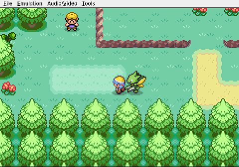
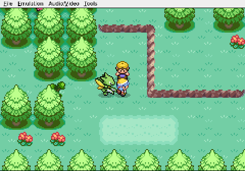
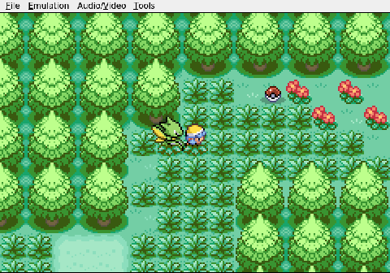

Gemini plays Pokemon Heart & Soul, Run 2
Knowing When to Fold 'Em
Viper runs into a wall she literally cannot touch, and the AI makes the right call.
Route 29 is already strange. The randomizer has swapped the usual Sentret and Pidgey for later-generation Pokemon—Tinkatink and Dreepy wander the tall grass at level 2, out of place and out of time.

It is the Dreepy that causes the problem. Gemini sends Viper into an encounter and immediately reads the type chart: Dreepy is Ghost/Dragon. Viper knows two moves, Quick Attack and Vacuum Wave. Normal and Fighting. Ghost-types are immune to both.

Viper cannot touch this thing. Not for a single point of damage.

What matters is what happens next. There is no flailing, no wasted turns of futile attacks. Gemini recognizes the dead end, skips the attack menu entirely, and selects Run.

In a Nuzlocke, every point of unnecessary chip damage edges a Pokemon closer to a permanent death. Gemini finds no win condition and simply leaves. The battle ends before it starts.